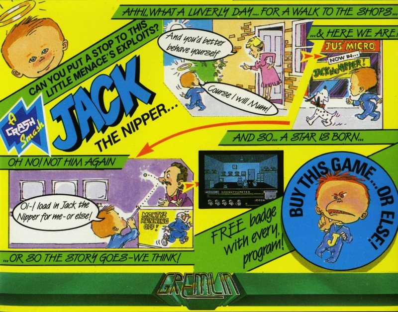
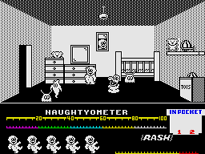
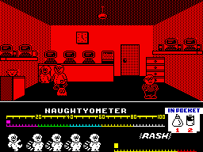
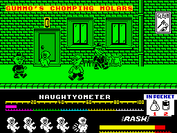

Jack the Nipper


{kind=link}

| Publisher: | Gremlin Graphics |
| Price: | £7.95 |
| Year: | 1986 |
| Source: | CRASH, Issue 30 |

Jack seems to be the all time greatest World Champion in naughtiness: a naughtier boy you could not wish to meet in fact or fiction. You think that saying BOO to Granny is naughty? Pah! Jack is in a whole different league — he blows up police stations on particularly naughty days. This is a level of rascallity that most boys and girls will never be able to achieve, even in their wildest dreams. Realising this, Gremlin decided to base a game around the naughtiest nipper in town.

in the hallway of his family’s home.
The game has only just started and the
would-be menace hasn’t picked up his
pea-shooter yet. Silly boy. His Dad,
sister and the family dog stump around
the hall, oblivious to the scary ghost!
As Jack’s controller the idea is to get the little sprog to cause as much grief and hassle as possible without getting the little tyke into trouble for his misdeeds. Job number one is to equip the romper-suited yobbo with a weapon. He’s not a particularly big chap, so a spitball firing pea-shooter is what’s needed. And luckily enough, it just happens to be placed on a shelf in Jack’s bedroom. Unluckily enough it has been put on a high shelf well above the nipper’s minuscule reach — probably hidden away by an oft-peashootered parental. Jack’s sproing and cavort factor, the product of a couple of years of packing away the Farleys rusks and creamy baby food, makes him hyperactive (probably all that E102.) Anyway, with a mere wiggle of the joystick or prod of the appropriate keys, it’s possible to propel this pint sized person skyward with the greatest of ease. A few well-timed jumps put Jack where he wants to be and he has two pockets in his suit for carrying useful menacing items.
Leaping around on the fumiture soon brings the vegetable propelling tube within Jack’s tiny grasp. Now the mayhem can really begin... Jack’s task is to complete around twenty dastardly stunts to boost his naughtyometer up to the hundred per cent mark. There are hazards, however, and when you’re as young as Jack one of the main problems with day to day life is dreaded botty rash caused by a wet and soggy nappy. Collisions with any of the other characters in the game aggravates this condition, as they mete out a good hiding to the miscreant. Jack’s Rash Rating climbs on a bar in the status area, and one of the five lives available is lost each time the Rash Factor goes critical.
Parents and shopkeepers give chase whenever a naughty deed is done in their presence, and ghosts also give Jack trouble. Luckily, Jack’s pea-shooter can be used to exorcise spectres — more often than not a ghost will disappear with a pea in its ear. Peablasting anybody else, including Bonzo, the Nipper’s pet dog, causes them to chug after you and increase poor little Jack’s Rash at an alarming rate.

battery and the glue. Jack’s about to
blow up the computers and make the
shopkeeper very angry indeed...
Naughty points are won for completing each of the tasks set out for Jack, most of which involve taking the right object to the right place. For example, Jack can scare the insides out of cats by finding a horn and honking it next to a slumbering pussy. Jack’s naughtyometer pops up nearly as fast as the poor old moggy, which is left clinging by its claws to the ceiling. What a naughty chap! Extra naughty points can be collected by taking objects and dropping them from a great height so that they smash.
The town consists of some fifty locations portrayed in a semi 3D way, and all the characters have been drawn in a cartoon style reminiscent of Willy the Kid and other comicbook heros. Jack can move left, right and in and out of the screen in the same way old Grumpy Gumphrey moved round in Supersleuth. The objects Jack is carrying are shown in a pocket at the top of the status area, and some careful juggling is sometimes needed to make sure the right item gets to the right place. Lose all the lives and the game’s over and little Nipper trolls onto the screen with a sarcastic appraisal of your attempts at menacing. Ah well, never mind, living up to the expectations of the naughtiest nipper alive is not an easy task. Closet vandals will have lots of fun with Jack the Nipper.
CRITICISM

the Naughtyometer rising nicely. Jack’s
got a sore botty at the moment though
— he’s been spanked quite a bit!
“How could this game possibly fail to be a hit? It’s just so appealing in both presentation and playability. The graphics are masterful, involving a previously ignored monochrome cartoon style that makes Jack look as though he’s just leapt out of the Beano. Gremlin have definitely come up with a winner in Jack the Nipper: gameplaywise things are fairly similar to many arcade adventures though the tasks to be performed really are quite funny. While the puzzles are not immediately obvious they aren’t overly hard either. The graphic style perks up the game no end. Overall an excellent game that well worth the price — run out and have a look at it today.”
“‘Come on, play the game! You’re not a wimp are you?’ asks the evil Sweeny Toddler character, an evil grin spread across his cheeky little fizzog. How can you resist such a challenge? The aim of the game — being as naughty as possible — is a novel and amusing one and the way you have to go about it is even better! Blowing up Police stations, ruining factories, shooting bobbies with a pea-shooter is all part and parcel of an average day in the romper suit of the world’s wickedest baby. The graphics are excellent and really give a cartoony feel to the game — go out and get it now! You’re not a wimp are you?”
“Jack the Nipper is a brilliantly presented game with a good title tune, a fun attract mode and little comments that pop up now and again and make it fun to play. All of the characters are drawn with expert precision and are animated very smoothly. The game, although basically monochromatic, is still appealing to the eye and has smart shaded backgrounds that are very detailed. Monsters look out of windows and posters stuck on the walls advertise products, to mention a few of the highlights. The little touches, like the nappy rash bar and the naughtyometer, make the game a bit different from the usual arcade/adventure stuff and you don’t have to be good at the game to enjoy playing it. Gremlin Graphics have brought out a game that will shine out in the depression of Summer.”
COMMENTS
| Control keys: | Z left, X right, O up, K down, 0 fire, ENTER go through door, Up and Fire to jump, Direction and Fire to shoot, H toggles pause mode, Q quit |
| Joystick: | Kempston, cursor, Interface 2 |
| Keyboard play: | Responsive, but slightly odd layout |
| Use of colour: | Monochromatic cartoon; tidy |
| Graphics: | Very apt — lovely cartoon characters |
| Sound: | Jolly tune in attract mode plus spot effects |
| Skill levels: | One |
| Screens: | 50 locations |
| General rating: | A great game for all you naughty types... |
| Use of computer: | 91% |
| Graphics: | 93% |
| Playability: | 93% |
| Getting started: | 92% |
| Addictive qualities: | 93% |
| Value for money: | 92% |
| Overall: | 93% |